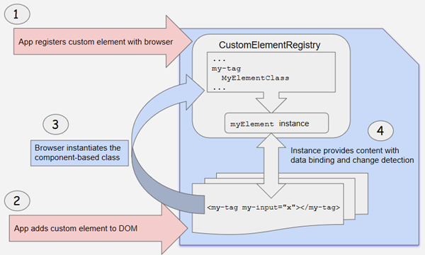

Angualr 自定义元素
Angular 元素 (Elements) 概览
- Angular 元素就是打包成自定义元素的 Angular 组件
- @angular/elements 包导出了一个 createCustomElement() API，它在 Angular 组件接口与变更检测功能和内置 DOM API 之间建立了一个桥梁
使用自定义元素
- 自定义元素会自举启动 —— 它们在添加到 DOM 中时就会自行启动自己，并在从 DOM 中移除时自行销毁自己
- 一旦自定义元素添加到了任何页面的 DOM 中，它的外观和行为就和其它的 HTML 元素一样了
工作原理
- 使用 createCustomElement() 函数来把组件转换成一个可注册成浏览器中自定义元素的类
- 注册完这个配置好的类之后，你就可以在内容中像内置 HTML 元素一样使用这个新元素了，比如直接把它加到 DOM 中
- 当你的自定义元素放进页面中时，浏览器会创建一个已注册类的实例。其内容是由组件模板提供的，它使用 Angular 模板语法，并且使用组件和 DOM 数据进行渲染。组件的输入属性（Property）对应于该元素的输入属性（Attribute）
<my-popup message="Use Angular!"></my-popup>

把组件转换成自定义元素映射
- Angular 提供了 createCustomElement() 函数，以支持把 Angular 组件及其依赖转换成自定义元素